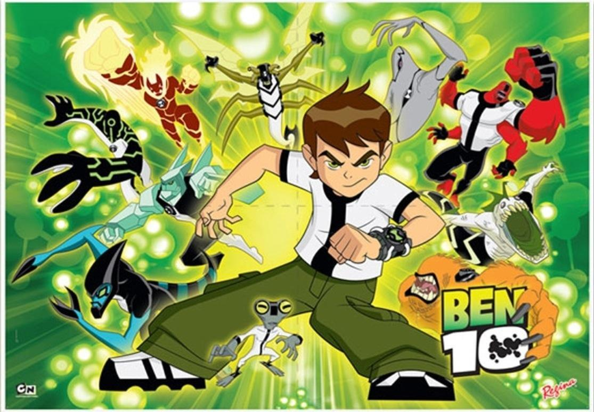

About Ben 10
He is a boy that can tramform in to anorther form of outer space Alien, and he uses it to protect the world from the bad guy.
Ben 10 With Some of the Aliens
And the Favorites of Mine
- Four Arm
- Ghost
- Stink Fly
- Humungousaur
Ben 10 Family
Ben has one sister and one grandfather that are always trying to help him out in every situation, Click on the link to get to know them better :D.